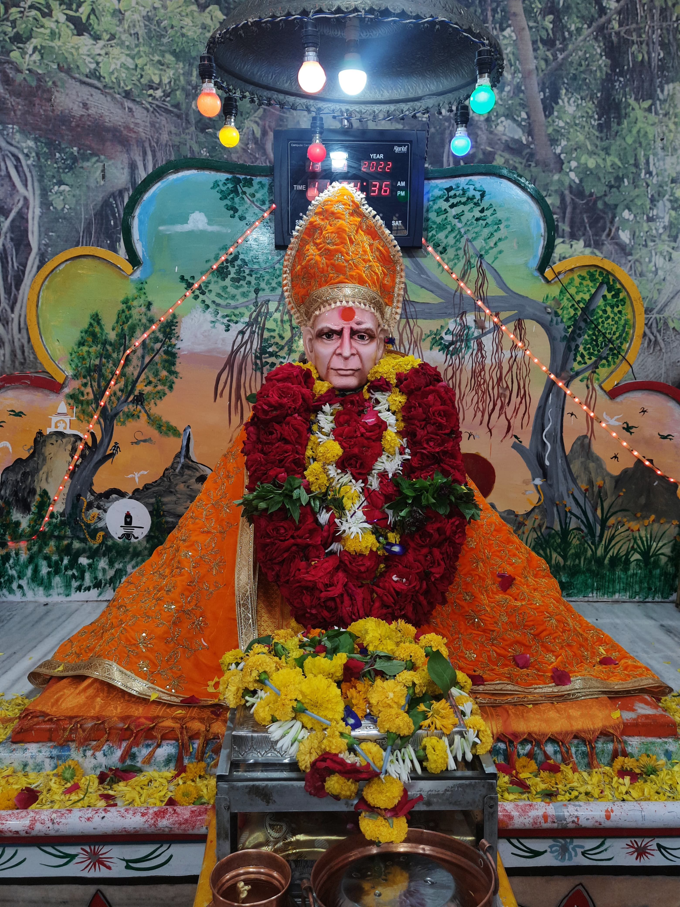

<!DOCTYPE html>
<html lang="en">

<head>
	<title>उपासना</title>
	<meta charset="utf-8">
	<meta name="viewport" content="width=device-width, initial-scale=1, shrink-to-fit=no">

	<link href="https://fonts.googleapis.com/css?family=Poppins:100,200,300,400,500,600,700,800,900" rel="stylesheet">

	<link rel="stylesheet" href="css/open-iconic-bootstrap.min.css">
	<link rel="stylesheet" href="css/animate.css">

	<link rel="stylesheet" href="css/owl.carousel.min.css">
	<link rel="stylesheet" href="css/owl.theme.default.min.css">
	<link rel="stylesheet" href="css/magnific-popup.css">

	<link rel="stylesheet" href="css/aos.css">

	<link rel="stylesheet" href="css/ionicons.min.css">

	<link rel="stylesheet" href="css/flaticon.css">
	<link rel="stylesheet" href="css/icomoon.css">
	<link rel="stylesheet" href="css/style.css">

	<style>
		body {
			background-color: #8B0000;
			/* Light Orange */
		}
	</style>
</head>

<body>
	<!-- Your content goes here -->
</body>

</html>


</head>

<body data-spy="scroll" data-target=".site-navbar-target" data-offset="300">


	<nav class="navbar navbar-expand-lg navbar-dark ftco_navbar ftco-navbar-light site-navbar-target" id="ftco-navbar">
		<div class="container">
			<a class="navbar-brand" href="index.html">
				
				उपासना
			</a>

			<button class="navbar-toggler js-fh5co-nav-toggle fh5co-nav-toggle" type="button" data-toggle="collapse"
				data-target="#ftco-nav" aria-controls="ftco-nav" aria-expanded="false" aria-label="Toggle navigation">
				<span class="oi oi-menu"></span> Menu
			</button>

			<div class="collapse navbar-collapse" id="ftco-nav">
				<ul class="navbar-nav nav ml-auto">
					<li class="nav-item"><a href="#home-section" class="nav-link"><span>माहिती</span></a></li>
					<li class="nav-item"><a href="#about-section" class="nav-link"><span>निःस्वार्थ भक्त</span></a></li>
					<li class="nav-item"><a href="#resume-section" class="nav-link"><span>आरती संग्रह</span></a></li>
					<li class="nav-item"><a href="#contact-section" class="nav-link"><span>फोटो</span></a></li>
				</ul>
			</div>
		</div>
	</nav>
	<section id="home-section" class="hero">
		<div class="home-slider  owl-carousel">
			<div class="slider-item ">
				<div class="overlay"></div>
				<div class="container">
					<div class="row d-md-flex no-gutters slider-text align-items-end justify-content-end"
						data-scrollax-parent="true">
						<div class="right-aligned-div">
							
							<div class="overlay"></div>
						</div>


						<div class="one-forth d-flex  align-items-center ftco-animate"
							data-scrollax=" properties: { translateY: '70%' }">
							<div class="text">
								<span class="sub_heading">•! श्री स्वामी समर्थ !•</span>
								<h1 class="mb-4 mt-3" style="font-size: 2.5rem;">
									स्व. शरद बधान यांच्या संकल्पनेतले<br>
									<span style="font-size: 3rem; font-weight: bold;">स्वामींचे भव्य मंदिर</span>
								</h1>


								<!-- Element to contain animated typing -->
								<span id="typing-animation"></span>

								<script>

									// Initialize the typing animation
									const typingAnimationElement = document.getElementById('typing-animation');

									// Create an array of typing text
									const typingTexts = [
										'नाम घ्या  ',
										'काम करा  ',
										'आनंदात रहा ',

									];

									// Create a function to display the typing animation for a given text
									function playTypingAnimation(text) {
										// Loop through each character and add it to the element
										for (let i = 0; i < text.length; i++) {
											setTimeout(() => {
												typingAnimationElement.textContent += text[i];
											}, i * 200); // Increase the delay to slow down the typing animation
										}

										// Once the animation is complete, reset the text and start over
										setTimeout(() => {
											typingAnimationElement.textContent = '';
											playTypingAnimation(typingTexts[(typingTexts.indexOf(text) + 1) % typingTexts.length]);
										}, text.length * 200);
									}

									// Start the typing animation loop
									playTypingAnimation(typingTexts[0]);

								</script>

								<br>
								<br>
								<h2>स्व. शरद बधान यांच्या स्वप्नपूर्तीचे प्रतीक असलेले हे भव्य मंदिर मनमाडमध्ये आहे, जे
									इ.स. २००४ मध्ये तयार झाले.</h2>
								<!-- <h2 class="d-flex" style="margin-bottom: 0">With over 5 years of experience</h2> -->
								<!-- <br> -->
								<!-- <br> -->
								<!-- <br> -->
								<p>
									<span style="color: white;">मंदिराचा नकाशा (google maps):</span>
									<a href="https://maps.app.goo.gl/Bf2eyT3SPXFj95so8"
										class="btn btn-primary py-3 px-4">येथे क्लिक करा</a>
								</p>


							</div>
						</div>
					</div>
				</div>
			</div>
		</div>
	</section>


	<section class="ftco-about img ftco-section ftco-no-pb" id="about-section">
		<div class="container">
			<div class="row justify-content-center">
				<div class="col-md-10 heading-section text-center ftco-animate">
					<div style="position: relative; display: inline-block; margin-bottom: 20px;">
						<!-- Added margin-bottom -->
						<h2 class="mb-1"
							style="font-size: 6rem; color: purple; letter-spacing: 0.1rem; font-weight: bold; text-shadow: -2px -2px 0 white, 2px -2px 0 white, -2px 2px 0 white, 2px 2px 0 white;">
							निःस्वार्थ भक्त</h2>
						<div
							style="height: 6px; background: white; position: absolute; bottom: -8px; left: 0; right: 0; border-radius: 10px;">
						</div>
					</div>

					<p style="color: white; margin-top: 10px; font-size: 1.5rem;">आत्मीयता, श्रद्धा आणि निःस्वार्थता
						यांचा संगम</p> <!-- Increased font size -->
				</div>


				<div class="col-md-6 col-lg-5 d-flex justify-content-center">
					<div class="about-img text-center">
						
					</div>
				</div>
			</div>
			<div class="row justify-content-center">
				<div class="col-md-12 text-center mt-3">
					<h2 style="font-weight: bold;">स्व. शरद हरिभाऊ बधान (आण्णा)</h2>
				</div>
			</div>
			<div class="row justify-content-center">
				<div class="col-md-10 text-center mt-3">
					<p style="color: white;">शरद बधान हे स्वामी समर्थांचे निःस्वार्थ भक्त होते, आणि त्यांनी अनेक वर्षे
						भक्तीमार्गाचा अवलंब केला होता. १९९७ पासून ते स्वामी समर्थांच्या सेवेत समर्पित होते. शरद बधान हे
						रोज लोकांना आणि प्राण्यांना पेढ्याचा प्रसाद वाटत आणि स्वामी समर्थांच्या नामस्मरणात मग्न असत.</p>

					<p style="color: white;">त्यांच्या जीवनाचा मुख्य उद्देश स्वामी समर्थांच्या भक्तीशी जोडलेला होता.
						त्यांचे ठाम मत होते की खरे सुख आणि समाधान निःस्वार्थ भक्तीत आणि स्वामी समर्थांच्या नामस्मरणात
						आहे, पैशात नाही. त्यांच्या मंदिरात दानपेटी नसणे हे विशेष होते, कारण त्यांनी भक्तीला
						व्यापारीकरणापासून दूर ठेवले होते.</p>

					<p style="color: white;">शरद बधान हे प्राणिमात्रांची काळजी घेण्यात आणि त्यांच्या कल्याणासाठी नेहमी
						तत्पर असत. ते भक्तीच्या कार्यात सक्रियपणे सहभागी होत असत, जसे की भव्य धार्मिक कार्यक्रमांचे
						आयोजन करणे आणि समाजातील गरजू लोकांना मदत करणे. त्यांची आत्मीयता आणि सहानुभूती त्यांच्या
						भक्तीमध्ये झळाळत होती. स्थानिक लोक त्यांचा आदर करत आणि त्यांना त्यांच्या निःस्वार्थ सेवेसाठी
						नेहमी कृतज्ञ राहिले आहेत.</p>

					<p style="color: white;">दुर्दैवाने, शरद बधान यांचे निधन १२ डिसेंबर २०२३ रोजी झाले. त्यांच्या
						निधनामुळे त्यांच्या भक्तांना आणि स्थानिक समुदायाला मोठा धक्का बसला. त्यांनी आपल्या जीवनात जो
						भक्तिपंथ आणि सेवा कार्य केले, त्याची आठवण आजही सर्वांना आहे. त्यांचा आदर्श आणि कार्य हे
						सर्वांसाठी प्रेरणादायी राहील.</p>
					<!-- Button to redirect to the Google Drive link -->
					<a href="https://drive.google.com/file/d/1iI2DAv5VrsivWIDMk5zP6ezwyglKcS0A/view?usp=drive_link"
						class="btn btn-danger mt-4"
						style="text-decoration: none; padding: 10px 20px; font-size: 1.2rem;">
						शरद बधान यांचा प्रेरणादायक जीवनपट पाहण्यासाठी येथे क्लिक करा
					</a>
				</div>
			</div>
		</div>
	</section>


	<section class="ftco-section" id="resume-section">
		<div class="container">
			<div class="row justify-content-center mb-5 pb-5">
				<div class="col-md-7 heading-section text-center ftco-animate">
					<div style="position: relative; display: inline-block; margin-bottom: 20px;">
						<h2 class="mb-1"
							style="font-size: 4rem; color: purple; letter-spacing: 0.1rem; font-weight: bold; text-shadow: -2px -2px 0 white, 2px -2px 0 white, -2px 2px 0 white, 2px 2px 0 white;">
							आरती संग्रह
						</h2>
						<div
							style="height: 6px; background: white; position: absolute; bottom: -8px; left: 0; right: 0; border-radius: 10px;">
						</div>
					</div>
					<p style="color: white; margin-top: 10px; font-size: 1.5rem;">स्वामींची स्तुती: आरतींचा दिव्य संग्रह
					</p>
					<p style="color: skyblue; margin-top: 10px; font-size: 1.2rem;"><strong>(आरती वाचण्यासाठी, कृपया
							आरतीच्या शीर्षकावर क्लिक करा.)</strong></p>
				</div>
			</div>

			<div class="row d-flex justify-content-center card-grid">
				<div class="col-md-4 d-flex ftco-animate card-item">
					<div class="blog-entry justify-content-end">
						<a href="https://drive.google.com/file/d/1juH07b-YIU5Kpi0a7Kh8-GFzi2IfQwrN/view?usp=sharing"
							class="block-20 zoom-effect" style="background-image: url('images/A.png');"></a>
						<div class="text mt-3 float-right d-block">
							<h3 class="heading"><a
									href="https://drive.google.com/file/d/1juH07b-YIU5Kpi0a7Kh8-GFzi2IfQwrN/view?usp=sharing">हृदयकमल
									आरती: स्वामी समर्थांची मानसपूजा</a></h3>
							<p>हृदयकमल आरती ही स्वामी समर्थांच्या मानसपूजेचे प्रतीक आहे. स्वर्गीय शरद बधान यांनी ही आरती
								स्वतः लिहिली होती आणि गेली अनेक वर्षे ते दररोज सकाळी ८:०० वाजता भक्तिभावाने म्हणत असत.
							</p>
						</div>
					</div>
				</div>

				<div class="col-md-4 d-flex ftco-animate card-item">
					<div class="blog-entry justify-content-end">
						<a href="https://drive.google.com/file/d/16dxikbJ_Y5JcILmlaNMuu6ZXSraLXsiB/view?usp=sharing"
							class="block-20 zoom-effect" style="background-image: url('images/B.jpg');"></a>
						<div class="text mt-3 float-right d-block">
							<h3 class="heading"><a
									href="https://drive.google.com/file/d/16dxikbJ_Y5JcILmlaNMuu6ZXSraLXsiB/view?usp=sharing">सकाळच्या
									आरत्या: दररोज ८:०० ते ८:३०</a></h3>
							<p>सकाळच्या आरत्या भक्तांना स्वामी समर्थांच्या कृपेचा अनुभव देतात आणि दिवसभरासाठी सकारात्मक
								ऊर्जा मिळवून देतात.</p>
						</div>
					</div>
				</div>

				<div class="col-md-4 d-flex ftco-animate card-item">
					<div class="blog-entry justify-content-end">
						<a href="https://drive.google.com/file/d/1r-sSxw-Qd8Lds_npzQ5lDxppMiTsa9pJ/view?usp=sharing"
							class="block-20 zoom-effect" style="background-image: url('images/c.png');"></a>
						<div class="text mt-3 float-right d-block">
							<h3 class="heading"><a
									href="https://drive.google.com/file/d/1r-sSxw-Qd8Lds_npzQ5lDxppMiTsa9pJ/view?usp=sharing">दुपारची
									नैवेद्य आरती : वेळ १२ ते १२:३०</a></h3>
							<p>दुपारची नैवेद्य आरती भक्तिमय वातावरणात पार पडते, ज्यात स्वामी समर्थांना नैवेद्य अर्पण
								केला जातो. या आरतीत सहभागी होऊन भक्तांना स्वामींच्या कृपेचा लाभ घेता येतो.</p>
						</div>
					</div>
				</div>

				<div class="col-md-4 d-flex ftco-animate card-item">
					<div class="blog-entry justify-content-end">
						<a href="https://drive.google.com/file/d/1JepyxpRVLH5p1H6WGONzwHNxBN7TK0yy/view?usp=sharing"
							class="block-20 zoom-effect" style="background-image: url('images/d.png');"></a>
						<div class="text mt-3 float-right d-block">
							<h3 class="heading"><a
									href="https://drive.google.com/file/d/1JepyxpRVLH5p1H6WGONzwHNxBN7TK0yy/view?usp=sharing">संध्याकाळची
									नैवेद्य आरती : वेळ ६:३० ते ७</a></h3>
							<p>संध्याकाळच्या या आरतीत, भक्त दिवसभराच्या यशासाठी स्वामींचे आभार मानतात आणि मनोभावे
								त्यांच्या दर्शन घेतात.</p>
						</div>
					</div>
				</div>
			</div>
		</div>
	</section>


	<section class="ftco-section contact-section ftco-no-pb custom-contact-section" id="contact-section">
		<div class="container">
			<div class="row justify-content-center mb-5 pb-3">
				<div style="text-align: center; margin-bottom: 20px;">
					<h2 class="mb-1"
						style="font-size: 4rem; color: purple; letter-spacing: 0.1rem; font-weight: bold; text-shadow: -2px -2px 0 white, 2px -2px 0 white, -2px 2px 0 white, 2px 2px 0 white;">
						फोटो
					</h2>
					<div
						style="height: 6px; background: white; margin: 0 auto; width: 80%; border-radius: 10px; position: relative; top: -8px;">
					</div>
					<p
						style="color: white; margin-top: 10px; font-size: 1.5rem; max-width: 800px; margin-left: auto; margin-right: auto;">
						स्वामी समर्थ मंदिराच्या सुंदर दृश्यांचे दर्शन
					</p>
				</div>
			</div>

			<div class="row custom-card-grid">
				<div class="col-md-4 d-flex ftco-animate">
					<div class="custom-card">
						
						<h3 class="card-title">श्री स्वामी समर्थ</h3>
						<p class="card-description">!! श्री स्वामी समर्थ !!</p>
					</div>
				</div>
				<div class="col-md-4 d-flex ftco-animate">
					<div class="custom-card">
						
						<h3 class="card-title">श्री स्वामी समर्थ</h3>
						<p class="card-description">२००४ साली प्राणप्रतिष्ठेच्या वेळी स्वामींच्या डोळ्यातून
							आलेले आनंदाश्रू</p>
					</div>
				</div>
				<div class="col-md-4 d-flex ftco-animate">
					<div class="custom-card">
						
						<h3 class="card-title">श्री स्वामी समर्थ</h3>
						<p class="card-description">स्वामींचे चरणकमळ</p>
					</div>
				</div>
				<div class="col-md-4 d-flex ftco-animate">
					<div class="custom-card">
						
						<h3 class="card-title">श्री स्वामी समर्थ</h3>
						<p class="card-description">!! श्री स्वामी समर्थ !!</p>
					</div>
				</div>
				<div class="col-md-4 d-flex ftco-animate">
					<div class="custom-card">
						
						<h3 class="card-title">श्री स्वामी समर्थ</h3>
						<p class="card-description">सेवेचे आदर्श पुरस्कर्ते स्व. आण्णासाहेब बधान</p>
					</div>
				</div>
				<div class="col-md-4 d-flex ftco-animate">
					<div class="custom-card">
						
						<h3 class="card-title">श्री स्वामी समर्थ</h3>
						<p class="card-description">!! श्री स्वामी समर्थ !!</p>
					</div>
				</div>
				<div class="col-md-4 d-flex ftco-animate">
					<div class="custom-card">
						
						<h3 class="card-title">श्री स्वामी समर्थ</h3>
						<p class="card-description">मंदिराचे आंतरिक सौंदर्य</p>
					</div>
				</div>
				<div class="col-md-4 d-flex ftco-animate">
					<div class="custom-card">
						
						<h3 class="card-title">Photo 8</h3>
						<p class="card-description">!! श्री स्वामी समर्थ !!</p>
					</div>
				</div>
				<div class="col-md-4 d-flex ftco-animate">
					<div class="custom-card">
						
						<h3 class="card-title">Photo 9</h3>
						<p class="card-description">!! श्री स्वामी समर्थ !!</p>
					</div>
				</div>
			</div>
	</section>


	<footer class="ftco-footer ftco-section">
		<div class="container">
			<div class="row">
				<div class="col-md-12 text-center">
					<p class="copyright">Copyright &copy; श्री स्वामीआण्णा सेवेकरी परिवार, Manmad - All Rights Reserved
					</p>
					<p class="contact-label">संपर्क:</p>
					<p>
						<a href="tel:9221670848" class="contact-link">श्री विजय शरद बधान - ९२२१६७०८४८</a> |
						<a href="tel:9422756644" class="contact-link">श्री सतीश शरद बधान - ९४२२७५६६६४</a>
					</p>
					<p class="footer-note">नाम घ्या, काम करा, आनंदात राहा</p>
				</div>
			</div>
		</div>
	</footer>


	<!-- loader -->
	<div id="ftco-loader" class="show fullscreen"><svg class="circular" width="48px" height="48px">
			<circle class="path-bg" cx="24" cy="24" r="22" fill="none" stroke-width="4" stroke="#eeeeee" />
			<circle class="path" cx="24" cy="24" r="22" fill="none" stroke-width="4" stroke-miterlimit="10"
				stroke="#F96D00" />
		</svg></div>


	<script src="js/jquery.min.js"></script>
	<script src="js/jquery-migrate-3.0.1.min.js"></script>
	<script src="js/popper.min.js"></script>
	<script src="js/bootstrap.min.js"></script>
	<script src="js/jquery.easing.1.3.js"></script>
	<script src="js/jquery.waypoints.min.js"></script>
	<script src="js/jquery.stellar.min.js"></script>
	<script src="js/owl.carousel.min.js"></script>
	<script src="js/jquery.magnific-popup.min.js"></script>
	<script src="js/aos.js"></script>
	<script src="js/jquery.animateNumber.min.js"></script>
	<script src="js/scrollax.min.js"></script>

	<script src="js/main.js"></script>

</body>

</html>